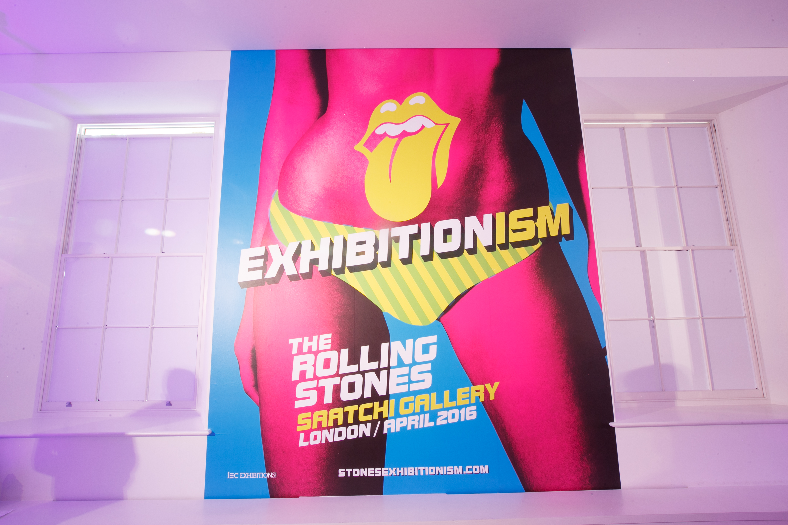

A selection of our most recent, bespoke experiences
Private Birthday Party
1940s Jazz Club
Dune SS16
Press Day
Exhibitionism
Launch Party
Amazon Summer Party
Private Staff & Family Party
Sanctuary Spa & St Tropez
Christmas Press Day
Metro Spring Party
1940s Blitz Party
ghd Azores
Press Day
Barmitazvah Party
Urban Street Fest
Gallery House Soho
Contemporary Showcase
Private Birthday Party
1940s Jazz Club
Set in the grand Porchester Hall in West London, we transformed the venue into a dark smokey jazz club inspired by the music scene of 1940’s. Guests came dressed for a night of music and dancing and were entertained by none other than Jools Holland and his Rhythm & Blues Orchestra followed by Jarvis Cocker on the decks. Guests drank from the martini bar and dined on fresh oysters.
Client: David Gilmour
Venue: The Porchester Hall, London
Guests: 250
Dune SS16
Press Day
The urban Fitzrovia Gallery was given a Summer makeover to show off Dunes new collection. Surrounded by marble surfaces, a dreamy pastel colour palette and a copper himmeli hanging installation, press sipped on Gin & Lavender Fizz. While looking at pretty shoes and accessories they listened to summer tunes from the resident Dune DJ. The giant Dune pompom became an instagram hit! Mens Dune took on a more masculine tone with shades of grey and blue against a vibrant summer sunset backdrop. Guest were given their own pompom keyring and an engraver was there to add a personal touch.
Client: Dune PR
Venue: Rock & Raven, London
Guests: 120
Exhibitionism
Launch Party

With the Kings Road being the old stomping ground of The Rolling Stones, The Saatchi Gallery was the perfect home for ‘Exhibitionism’ and we were asked to produce the party to launch it. The vibrant branding was our colour pallette for the evening so we kept the furniture simple and sleek, with white chesterfields, white perspex bars and poseur tables. Green hydrangea arrangements complimented the branding and Rolling Stones lips and the Exhibitionism poster pants made fitting photobooth props. 500 VIP guests drank Pommery Champagne and British inspired menu. The replica Marquee door was pulled out of storage and resurrected as a nod towards the band's early gig days in London and plasma screens were installed throughout the gallery showing Stones images throughout the years.
Client: iEC, Rolling Stones
Venue: Saatchi Gallery, London
Guests: 500
Amazon Summer Party
Private Staff & Family Party
We created a fun, festival themed party with colourful Indian marquees, sari bunting and a central bandstand. A selection of street food served from vintage VW’s was on offer including burritos, mac & cheese, burgers and salads, washed down with pimms on tap. Guests then danced the afternoon away at the silent disco but only after a visit to the fancy dress tent. The little ones were kept busy with walkabout storytelling, dance classes, puppet shows and a farm yard of animals - the farm’s long necked alpaca quickly becoming the star of the show (and everyone’s selfies) for both kids and adults!
Client: Amazon.co.uk
Venue: Bedford Square Gardens
Guests: 1600
Sanctuary Spa & St Tropez
Christmas Press Day
In the heart of Soho, this London town house was given a homely scandinavian feel complete with fur rugs, an open fire, cool pine and shades of cream and grey. The centre piece at the SanctuarySpa press day was a bespoke winter tree complete with hydrangea snow white pompoms hanging from the branches. Our installation was complimented with the aromatic candles that filled the air. The top floor was transformed into a studio loft consisting of a palette bed, mirror balls and a full body St Tropez tanning booth. This was the perfect setting to showcase the 2015 Christmas gift range.
Client: Sanctuary Spa & St Tropez
Venue: Gallery House Soho
Guests: 100
Metro Spring Party
1940s Blitz Party
Metro asked us to produce a Spring Party as a thankyou to all their clients and staff. One Marylebone, a spectacular converted church on the edges of Regent’s Park was used to create a Blitz style party. Guests were greeted by glamorous 40’s hosts and directed to the first floor reception, complete with a champagne saucer tower, a 1940’s vocal trio and a gramophone DJ. Later in the evening, the ground floor was revealed with a choreographed swing performance. The room was dressed with union jack bunting, a large central wooden bar, sandbags and beer barrel poseur tables. Roxy was the codename and the keeper of the Metro secret bar, accessed only via a red London phone box. In the intimate bar which seated 20 guests, Roxy served her own signature negronis whilst keeping the customer happy. Ration themed food stations served boxes of pies and mash followed by pimms jelly and icecream.
Client: Metro Newspaper
Venue: One Marylebone, London
Guests: 800
ghd Azores
Press Day
To create a summer paradise was the brief for ghd Azores press day, taking inspiration from the product branding and the instagram style filter. A large beach cabana was built in the centre of the studio to house private one-on-one hair appointments for the press with the gdh hair Ambassador. The perimeter of the room was dressed with real palms, beach style furniture under a pink glow from the ‘Sun, Sea & ghd’ neon light. The evening reception allowed invited beauty press to drop in and grab a seasonal cocktail. These were made in real pineapples and coconut shells and were the perfect accessory for a quick snap in the tropical photobooth. The guests left with their very own set of Azores ghds & matching Victoria Beckham aviators. Those lucky press!
Client: ghd PR
Venue: ghd Dean Street Studio
Guests: 50
Barmitazvah Party
Urban Street Fest
Ted & his New York parents wanted a proper urban party with top tunes, arcades, street food and a ping pong table. The venue had a cool industrial decor which we dressed with homemade graffiti flowers. As a Lego fan, we had a Lego portrait made that was centrepiece of the reception area. Guests enjoyed bespoke cocktails including ‘I’m a Man-teeny’ watermelon martinis. A caricaturist and close up magician worked the room, while the kids and adults played on the arcades and ping pong. Dinner was served from our urban street fest with food stalls including the ‘Mitzvah Meat Shack’, ‘Ted’s Notting Gill Chippy’ and ‘East of Israel Noodle Bar’ followed by a full Baskin & Robbins ice cream bar. The fantastic neon saxophonist & bongo players entertained the crowd while the DJ and dancers took guests through a dancefloor journey.
Client: Ted's Folks
Venue: Mode, Ladbroke Grove
Guests: 185
Gallery House Soho
Contemporary Showcase
We teamed up with our creative event partners to showcase the stunning contemporary Gallery House Soho. In stark contrast to the back streets of Soho guests entered into our very own upside down meadow. The white brick bar became the focal point of the first floor and it was here you could taste an array of cocktails all created by our in house mixologists. The industrial furniture was the perfect addition to compliment this blank white space and it allowed us to show the fabulous items we can provide. A number of huge vibrant floral arrangements positioned in urns and were a real talking point as guests entered each room. The classic hashtag photo booth was just perfect for sharing social media worthy moments. Last but not least was our roof top inspired garden, large macrame hung from the ceiling alongside another cocktail bar and a selection of wicker furniture including our beautiful peacock chairs.